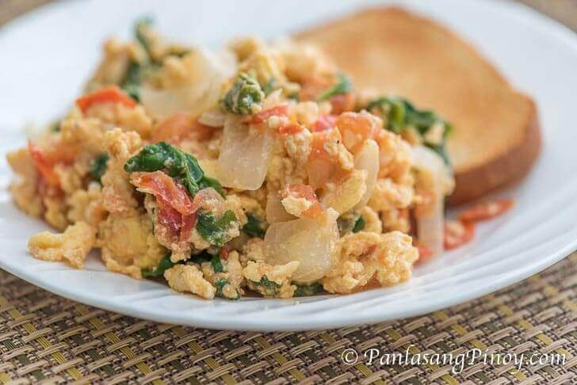

Scrambled Eggs

Nutritious and Delicious Scrambled Eggs Recipe
Today we will be making a vitamin packed and delicious scrambled egg recipe to start youd day off on the right foot!
Ingredients
- Two Jumbo Eggs
- Half an Onion
- Half a Tomato
- Olive Oil
- Six Spinach Leaves
- Salt
- Paprika or Black Pepper
- Garlic Powder
Steps
- Crack both Jumbo Eggs into a bowl.
- Sprinkle in a pinch of your seasonings.
- Whisk eggs until fully mixed.
- Dice onions into small pieces.
- Dice tomatoes in to desired sized chunks.
- Rinse spinach leaves thoroughly.
- Put desired amount of Olive Oil into pan at Medium Heat and allow to heat up a bit.
- Cook onions in pan until they begin to slightly pan.
- Now put diced tomatoes in pan until heat evaporates some of the juices.
- Pour egg mixture into pan and fold throughout cooking process.
- When half cooked, place spinach into pan.
- Continue to fold egg mixture until cooked to desired texture.
- Plate it up and enjoy! A quick, tasty and nutritious scrambled egg recipe!